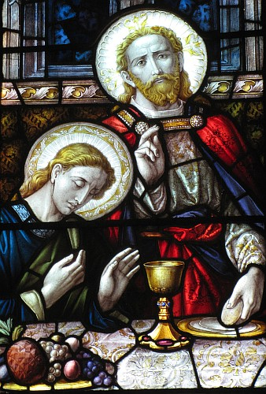

La Bouonne Nouvelle s'lon Luc, Chapitre 22
Vèrsets 1-34
À chu temps-là nou s'appréchait d'la fête du pain sans l'vain (chein qu'nou-s'appelle la Pâque ès Juis), et les grands prêtres et l's êcrivains chèrchaient un mouoyen dé l'mett' à mort, mais il' avaient peux du peupl'ye. Assa l'Malîn entrit dans Judâ l'Kériotchien, tchi 'tait iun d'la Douzaine. Et ch'tî-chîn s'en fut bagouler auve les grands prêtres et les gouvèrneurs entouor coumme tchi qu'i' pouôrrait l'us vendre. I' 'taient bein heutheurs, ieux, et lus accordîdrent d'lî bailli des sou. Et i' fit marchi auve ieux dé l'us d'livrer, s'il en trouvait l'opporteunité, quand i' n'y'avait pon d'monde lé tou d'li.
Lé jour du pain sans l'vain arrivit, tch'est pouor sacrifier l'angné d'Pâque. Jésû don env'yit Pièrre et Jean en lus dîthant, "All'-ouos-en et griyiz la Pâque pouor nous, à seule fîn qué j'piêssons fricoter."
Et i' lî dîdrent, "Où'est qu'j'éthons à l'èrgraie?"
Et i' lus dit, "Quand ous allez en ville, ou vèrrez un houmme à vos appréchi en tchithiant eune joudgie dg'ieau. Allez souotre li et entrez dans la maîson dans tchi qu'il entrétha, épis dites au maît' d'la maîson, 'Lé Maît' a dit, "Où'est qu'est l'appartènement d's învités dans tchi qué j'pouôrrai fricoter pouor la Pâque dé compangnie auve mes discipl'yes?"' Et i' vos amont'ta à un grand appartènement auve eune tabl'ye et par iou s'assiéthe. Griyiz tout là."
Et i' lus en fûdrent, et tout s'adonnit coumme i' l'avait dit. Et il' y griyîdrent la Pâque. Et quand vînt l'heuthe, i' s'y'assiévit dé compangnie auve les apôtres. Et i' dit, "J'ai ieu grande envie d'mangi chutte Pâque auve vous d'vant pâsser l'pas - ch'est en tchi j'vos dis qué j'n'l'èrmang'geai d'aut' entréchîn qu'ou n'sait accomplyie dans l'rouoyaume dé Dgieu."
Épis i' prînt un mogue et un co eune action d'grâces faite, i' dit, "Prannez chennechîn et chârez-lé! Car j'vos dis qué j'n'èrprendrai d'aut' du frit d'la vîngne entréchîn qu'lé rouoyaume dé Dgieu n'veinge."

Épis i' prînt un pain et un co eune action d'grâces faite, il en chârit des couêpîns et dit, "Chennechîn est man corps, tch'est bailli pouor vous: faites chennechîn en mémouaithe dé mé."
Et il en fit d'même auve la modgie auprès l'souper en dîthant, "Chutte modgie est d'la nouvelle alliance, grée atout man sang tch'est bailli pouor vous. Mais êv'chîn y'en a tchi m'trisonn'na et i' met sa main sus chutte tabl'ye. Car i' s'sa au fis d'l'Houmme coumme chenna a 'té prédit, mais malheu au chein tchi l'trisonne!" Et i' lus êcantîdrent à lus entré-d'mander létché d'entre ieux pouôrrait faithe d'ité. Et i' dêrengliaient étout pouor létché d'entré ieux s'sait l'pus grand.
I' lus dit, "Les rouais des paîens lus cârribottent et les cheins tchi les gouvèrnent lus amoussieutent. Mais i' n'en est pon d'même auve vous; l'pus grand d'entré vous s'sa si à co l'fouângnot, et la grôsse tête si à co l'sèrveux. Viy'-ous, létché est l'pus grand, l'învité tch'est attablié ou l'chein tchi lî sèrt? Ch'n'est-i' pon l'attablié? Mais j'sis parmi vous coumme un sèrveux. Ous êtes les cheins tch'ont tînt bouon auve mé dans m's êpreuves, et j'vos donne, coumme man Péthe m'a donné, un rouoyaume, à seule fîn qu'ou piêssêtes mangi et baithe à ma tabl'ye dans man rouoyaume, et ou s'sez assis sus des trônes pouor jugi les douze tribus d'Israël. Simon, Simon, êcoute! L'Malîn a prié d'pouver vos craînchi coumme du fronment, mais j'ai prié, mé, pouor té pouor qué ta fouai n'sait pon faillie, et té, un co qu'tu s'sa r'vénu, qu'tu renforche tes fréthes."
Et i' lî dit, "Seigneu, j'sis prêt à aller acanté té en prison et à la mort!"
I' dit, "J'té dis, man Rotchi, entréchîn qu'lé co n'chante la deuxième fais aniet, tu dithas trais fais qu'tu n'mé connais pon."
Vèrsets 14-22
Et quand vînt l'heuthe dé c'menchi, Jésû s'attablyit auve ses approtis au ras d'li, et i' lus dit, "J'ai 'té entchéthinné pouor mangi chu fricot d'Pâque acanté vous d'vant qué j'daive suffâtchi. J'dis chennechîn à tout vous achteu: j'n'en mang'geais pon dèrché entréchîn qu'lé Rouoyaume du Bouôn Dgieu veinge." Épis i' prînt l'mogue, èrmèrcyit l'Bouôn Dgieu et dit, "Prannez chennechîn, et chârez-en parmi vous. J'dis chennechîn: J'n'en béthais pon d'chu jus d'la vîngne entréchîn qu'lé Rouoyaume du Bouôn Dgieu veinge." Et i' prînt l'pain étout et quand il avait r'mèrcié l'Bouôn Dgieu, i' lé g'dachit et lus en baillit des gobîns, et dit, "Chennechîn est man corps offèrt pouor vous. Faites dé même en ma mémouaithe." Et d'même auprès l'fricot i' prînt la modgie d'vîn et dit, "Chutte modgie-chîn est un sîngne d'la nouvelle alliance du Bouôn Dgieu scêllée atout man sang vèrsé pouor vous. Mais mêfi'-ous! Lé chein tch'est pouor mé trisonner est attablié acanté mé. Pouor dé mé, lé Fis dé l'houmme, j'ai à mouothi s'lon l'plian du Bouôn Dgieu. Mais qu'lé chein tchi m'trisonne sait maûdit!"
Vèrsets 14-23
Au co l'heuthe i' s'attablyit acanté l's approtis. I' lus dit, "J'ai 'té d'hait d'mangi chutte Pâque acanté vous d'vant d'suffâtchi; ch'est en tchi j'vos dis qué j'n'en mang'geai acouo d'aut' entréchîn qué ch'sait accomplyi au rouoyaume du Bouôn Dgieu." Épis i' prînt un mogue et ayant fait eune action d'grâce i' dit, "Prannez-en et chârez-lé entré vous; ch'est en tchi j'vos dis qu'entréchîn j'n'en béthai pon du frit d'la vîngne entréchîn qu'lé rouoyaume du Bouôn Dgieu veinge." Épis i' prînt un pain, et ayant fait eune action d'grâce i' l'trilyit et l'us baillit et dit, "Ch'est man corps tch'est bailli pouor vous. Faites chennechîn en ramémouaith'thie d'mé." Et i' fit d'même auve la modgie auprès l'souper en dithant, "Chutte modgie tch'est vèrsée pouor vous est la nouvelle alliance dans man sang. Mais viy'-ous qué l'chein tchi m'trisonn'na est acanté mé, et sa main est sus la tabl'ye. Ch'est en tchi l'Fis d'l'Houmme s'en va coumme chenna a 'té dêtèrminné, mais malheu au chein par tchi qu'il est trisonné!" Là-d'ssus i' lus êcantîdrent à lus ent'-démander pouor létché d'entré ieux tchi pouôrrait faithe d'ité.
Vèrsets 31-34
Et l'Seigneu dit, "Simon, Simon, êv'chîn l'Satan a d'mandé d'vos aver à seule fîn d'vos craînchi coumme du fronment, mais j'ai prié pouor té à seule fîn qu'ta fouai n'manque pon et quand tu r'veindras qu'tu renforche tes fréthes."
Et i' lî dit, "Seigneu, j'sis prêt à aller acanté té jusqu'en prison et à la mort."
Et i' dit, "J'té dis, man Pièrre, qu'lé co né chant'ta pon aniet d'vant qu'tu r'nie trais fais qu'tu m'connais."
Vèrsets 35-53
 Et i' lus dit, "Quand j'vos env'yis par les c'mîns sans l'sou, sans pouque, sans saûlés, 'têt'-ous au d'sans?"
Et i' lus dit, "Quand j'vos env'yis par les c'mîns sans l'sou, sans pouque, sans saûlés, 'têt'-ous au d'sans?"
I' rêponnîdrent qué nânnîn, et i' lus dit, "Assa l'chein tch'a eune poutchie d'sou ou d'mangi, qu'i' la preinge, et l'chein tchi n'en a pon, qu'i' vende sa câsaque et acate un sâbre. J'vos dis qu'ches patholes-chîn éthont lus r'êffet en mé: 'I' 'tait compté parmi les malfaiteurs'. Véthe, chein tch'est êcrit entouor mé est à s'adonner."
I' dîdrent, "Seigneu, êv'chîn deux sâbres!"
I' rêponnit, "Y'a du bouon."
I' s'dêhalit et s'en fut coumme d'amors au Mont ès Olivièrs, et les discipl'yes lus en fûdrent acanté li. Quand il y'arrivit i' lus dit, "Priez qu'ou n'séyiz pon êprouvés." Épis i s'cârrit un p'tit but et s'agenouoillit en priéthe, et dit, "Péthe s'i' t'pliaît hale chutte modgie d'mé, mais raîque s'i' t'pliaît, pon s'i' m'pliaît." Épis un m'sagi du ciel lî géthit pouor lé s'couothi. I' 'tait si gêné et priait si dû qu'il en suait coumme eune sangnie êtrueûlée dans l'aithe. Un co sa priéthe dite, i' s'butit et r'allit ès discipl'yes et vit qu'i' dormaient en deu, et i' dit, "Pouortchi qu'ou dormez? Rêvil'-ous et priez qu'ou n'séyiz pon êprouvés!" Et coumme i 'tait à dithe ches patholes, v'là tchi vîndrent eune dgaîngue dé monde, et Judâ, iun d'la douzaine, tchi les m'nait, s'appréchait d'li pouor lî bailli un bécot.
Mais Jésû lî dit, "Judâ, t'en vas-tu don trisonner l'Fis d'l'Houmme atout un bécot?"
Quand les cheins tchi 'taient auve li vîdrent chein tchi s'adonnait, i' dîdrent, "Seigneu, ch'est-i' d'faithe sèrvi nos armes?" Épis iun dg'ieux sâbrit l'sèrveux du grand prêtre et en copit l'ouothelle dêtre.
Mais Jésû dit, "Ramâss'-ous!" Et i' touchit s'n ouothelle et l'èrdgéthit. Et Jésû dit ès grands prêtres et ès officièrs du Templ'ye et ès sénateurs tchi lus 'taient dêhalés contre li. "Vos êt'-ous dêhalés auve des sâbres et des choutchets, si ch'tait contre un voleux d'grand c'mîn? Quand j'tais d'compangnie auve vous dans l'templ'ye châque jour, ou n'mé gaffîtes pon, mais ous êtes en l'heu pouor l'pouvé d'la nièrcheu!"
Vèrsets 54-62
 Et nou l'blioutchit et l'am'nit siez l'grand prêtre. Et Pièrre s'en fut souotre ieux, mais bein dêcârré. Et nou satchit eune fouée dans l'bel et nou s'assiévit ensembl'ye, et Pièrre auve ieux. Épis eune cèrtaine sèrvante l'êpyit coumme i' 'tait assis auprès du feu, et l'dgîngnit et dit, "Ch't houmme-chîn 'tait auve ieux étout."
Et nou l'blioutchit et l'am'nit siez l'grand prêtre. Et Pièrre s'en fut souotre ieux, mais bein dêcârré. Et nou satchit eune fouée dans l'bel et nou s'assiévit ensembl'ye, et Pièrre auve ieux. Épis eune cèrtaine sèrvante l'êpyit coumme i' 'tait assis auprès du feu, et l'dgîngnit et dit, "Ch't houmme-chîn 'tait auve ieux étout."
Mais i' l'èrnyit en dîthant, "Bouonnefemme, jé n'lé connais pon."
Et auprès eune bordée, y'en avait un aut' tchi l'êpyit et dit, "Té, tu'es iun d'ches'-là." Et i' dit, "Nou-fait, man bouonhoumme!"
Épis auprès dans eune heuthe, n'en v'là un aut' tchi dit hardîment, "Dé vrai ch't houmme-chîn 'tait auve ieux, li étout, car il est un Galiléen."
Et Pièrre dit, "Man bouonhomme, jé n'sai rein entouor chein qu'tu dis!" Et né v'là, coumme i' 'tait à d'viser, lé co chantit. Et l'Seigneu s'èrtouônnit et lî teurtit eune pathe dg'ièrs. Et les patholes du Seigneu vîndrent à l'esprit d'Pièrre, coumme i' li'avait dit, "D'vant qu'lé co chante, tu m'èrniêthas trais fais." Et Pièrre s'en fut et plieuthit en plieuth'thas-tu.
Vèrsets 63-71
Assa l's hoummes tchi 'taient à mannier Jésû 'taient à l'abafouer et à l'astitchi. Et i' l'encafotîdrent et lî baillîdrent des ouappes et d'mandîdrent, "Eh bein di-nous, prophète qué tu'es, tchi qui t'a bailli chutte ouappe?" Et i' l'traitaient dé toutes les sortes.
Épis à sinne dé jeu, touos les vièrs du peupl'ye lus assemblyîdrent, les grands prêtres et les maît's d'la louai. Il' emm'nîdrent Jésû à lus Assembliée et i' lî dîdrent, "Si tu'es l'Onguenné, di-l'nous!"
Et i' lus rêponnit, "Si j'vos l'dis, ou n'mé craithez pon. Et si j'vos d'mande autcheune chose, ou n'mé rêpondrez pon tout coumme. Mais entréchîn d'achteu, lé Fis d'l'Houmme s'sa jutchi au dêtre du Tout-Piêssant."
Et touos ieux, i' dîdrent, "Tu'es don l'Fis du Bouôn Dgieu?"
Et Jésû lus rêponnit, "Ch'est en tchi, ou l'avez dit, vous!"
"Tchi acouo qué j'voulons en vaie d'preuve?" qu'i' d'mandîdrent. "Achteu j'l'avons ouï d'sa propre bouoche!"
Viyiz étout:
- La Bibl'ye
- La Bouonne Nouvelle s'lon Saint Luc, chapitre iun, vèrsets 1-4
- La Bouonne Nouvelle s'lon Luc, Chapitre 1, vèrsets v-xxv
- L'Êvangile sélon Saint Luc, chapitre iun, vèrsets 26-38
- L'Êvangile sélon St.-Luc: chapitre 1 versêts xxvi à xxxviii - eune aut' vèrsion
- L'Êvangile sélon Saint Luc, chapitre iun, vèrsets 26-38 - eune aut' vèrsion
- La Bouonne Nouvelle s'lon Luc, Chapitre 1, vèrsets 39-56
- L'Êvangile sélon St.-Luc: chapitre 2 versêts i à vii
- L'Êvangile sélon St.-Luc, Chapitre deux, Vèrsets 1 à 7- eune aut' vèrsion
- L'Êvangile sélon Saint Luc, chapitre 2, vèrsets viii à xx
- L'Êvangile sélon St.-Luc, Chapitre deux, Vèrsets 8 à 20- eune aut' vèrsion
- L'Êvangile sélon St.-Luc: chapitre 2, versêts viii à xx - eune aut' vèrsion
- L'Êvangile sélon St.-Luc: Chapitre 2, Versêts 8 à 20 - eune aut' vèrsion
- La Bouonne Nouvelle s'lon Luc, Chapitre 2, vèrsets 25-33
- La Bouonne Nouvelle s'lon Luc: 3
- La Bouonne Nouvelle s'lon Luc, Chapitre 3, vèrsets 23 à 38
- La Bouonne Nouvelle s'lon Luc: 4
- La Bouonne Nouvelle s'lon Luc, Chapitre 8
- La Bouonne Nouvelle s'lon Luc: 9
- La Bouonne Nouvelle s'lon Luc: 10
- Lé Bouôn Samathitain
- La Bouonne Nouvelle s'lon Luc: 12
- La Bouonne Nouvelle s'lon Luc: 13
- Luc: 14
- La Bouonne Nouvelle s'lon Luc, 15 iii-vi
- La Bouonne Nouvelle s'lon Luc, Chapitre 15, vèrsets viii-x
- L'Êfant Prodigue
- La Bouonne Nouvelle s'lon Luc: 17
- La Bouonne Nouvelle s'lon Luc: 18
- La Bouonne Nouvelle s'lon Luc, Chapitre 19
- La Bouonne Nouvelle s'lon Luc, chapitre 19, vêrsets 1-10
- L'Êvangile sélon Saint Luc, chapitre 19, vèrsets 42-44
- La Bouonne Nouvelle s'lon Luc: 20
- La Bouonne Nouvelle s'lon Luc, Chapitre 20, vèrsets 20-26
- La Bouonne Nouvelle s'lon Luc, Chapitre 21
- La Bouonne Nouvelle s'lon Luc, Chapitre 23
- La Bouonne Nouvelle s'lon Luc, Chapitre 24
- La Bouonne Nouvelle s'lon Saint Luc, chapitre 24, vèrsets 36-43